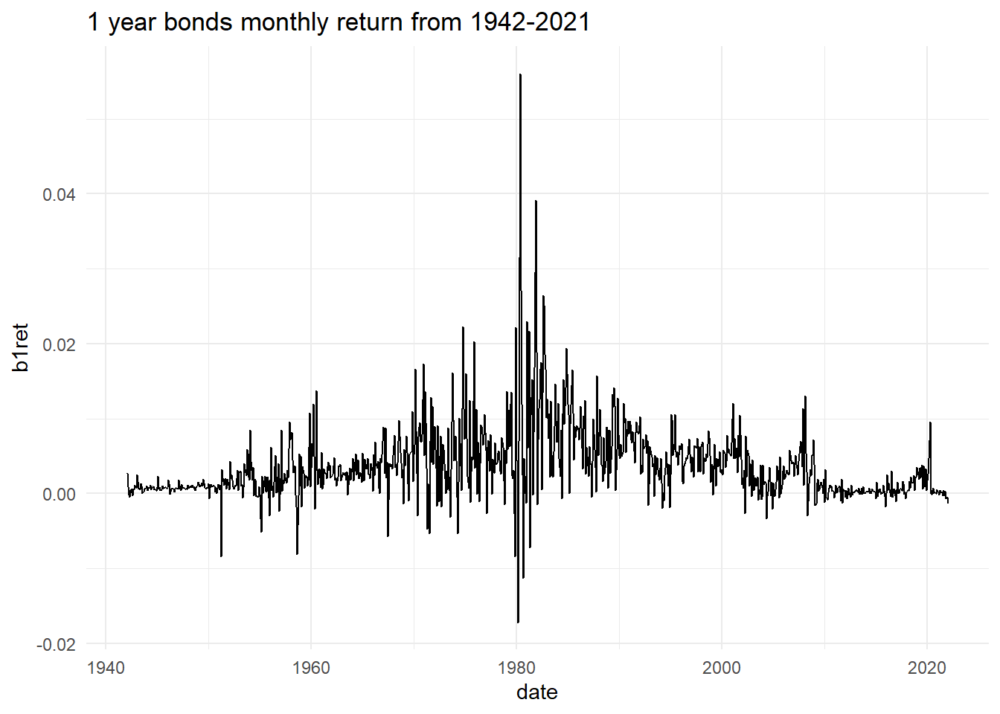
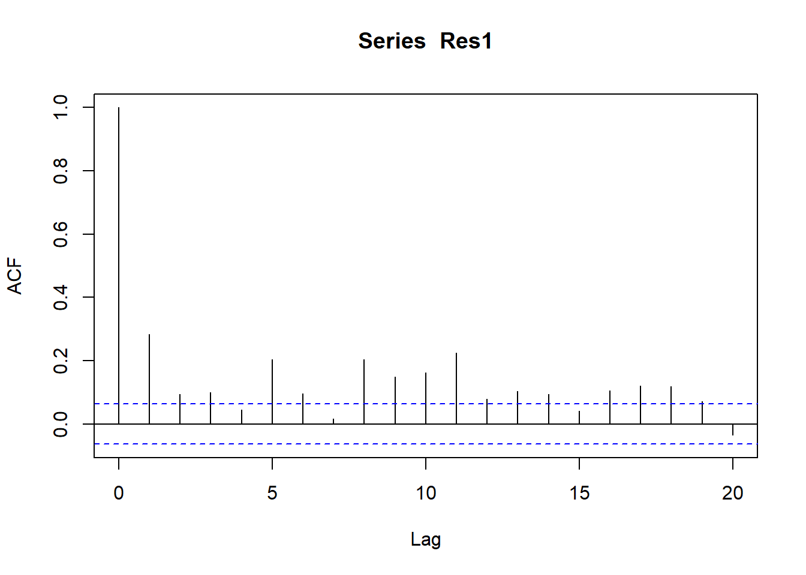
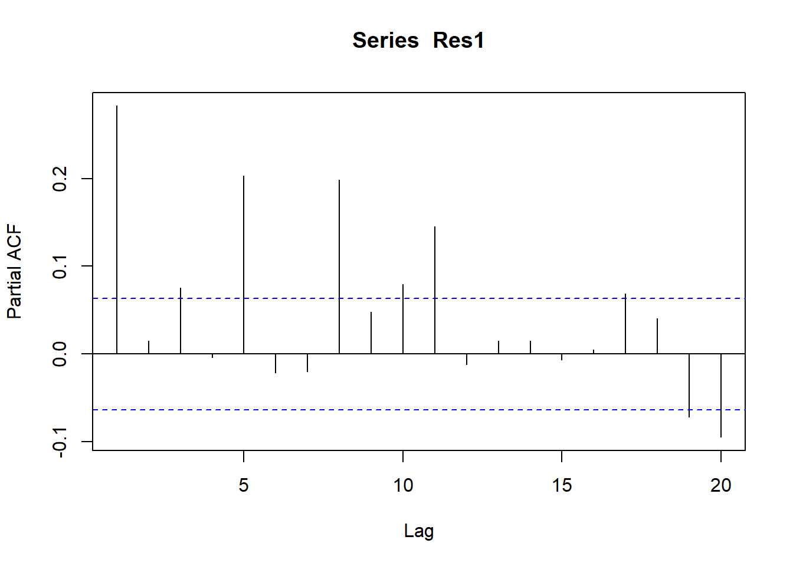
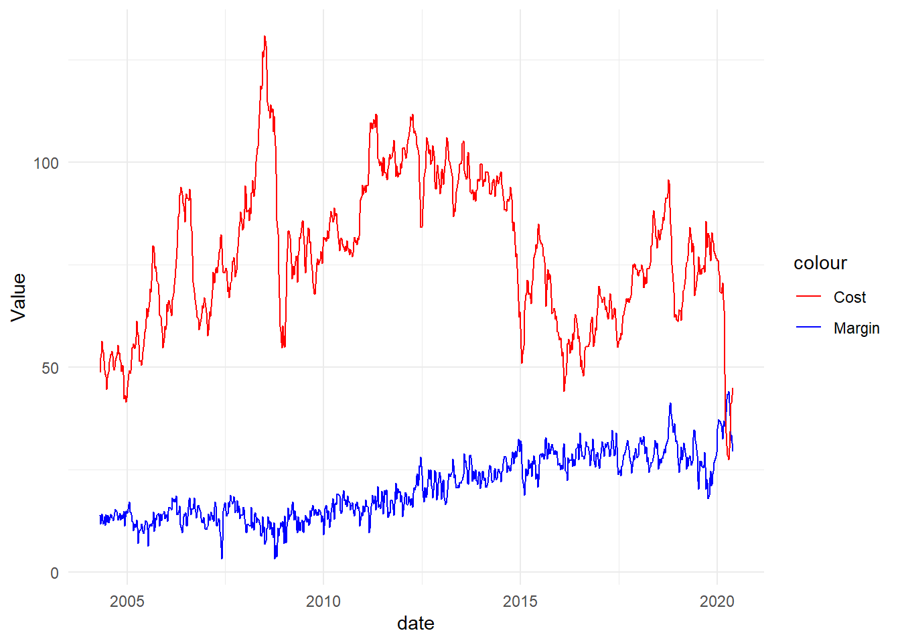

ar_df <- ar_df |>select(date, everything()) # date is placed as first
Once we have data in required format, we can proceed to handle the questions asked about it.
Description of the problem on bonds data
In all the following questions above mentiond data frame is used. In this problem, we are interested in the time series properties of bond returns. We collect monthly data from 1942M01 to 2021M12 for the following variables:
b1ret denotes the 1-year bond return,
t30ret denotes the 30-day return on treasury bill,
cpiret denotes the inflation rate.
We will be focusing on the bond return variable b1ret throughout this analysis. Create a second variable b1ret1 from the original variable, where b1ret1 has observations from 1942M01 to 2020M12. We will be using b1ret1 for estimation, and forecast the months of 2021 at the end.
a) Plot the TS variable and comment on its features.
ggplot(ar_df)+aes(x=date,y=b1ret)+geom_line()+labs(title="1 year bonds monthly return from 1942-2021")+theme_minimal()

This graph indicates that around 1980s, these bond returns were highly volatile and from 1970-1990s period is also of high return period. In mid 2010, these returns show very promising growth but then after 2008 crisis bonds return have least volatility closely mirroring 1940s.
b) Estimate a quadratic trend for this TS variable. Write down the equation and test the regression residuals “Res1” for stationary and autocorrelation.
# Assuming you have a data frame called 'data' with 'date' and 'bonds' variables# Convert the 'date' variable to a numeric formatar_df$Date <-as.numeric(as.Date(ar_df$date))# Fit a quadratic regression modelmodel_trend <-lm(b1ret ~ Date +I(Date^2), data = ar_df)# Print the model summarylibrary(broom)tidy(model_trend)
c) Using the ACF and PACF for the stationary version of Res1 to propose an initial ARIMA model for Res1.
# Assuming you have a model object called 'model' and a data frame called 'data' with the dependent variable 'y' and independent variables 'x1', 'x2', etc.# Fit the modelmodel1 <-lm(b1ret ~ Date +I(Date^2), data = ar_df)# Calculate the residualsRes1 <-residuals(model1)# Assuming 'Res1' is a time series objectacf_res1 <-acf(Res1, lag.max =20)

pacf_res1 <-pacf(Res1, lag.max =20)

d) Provide several ARIMA models and discuss which ARIMA model you would pick as the final model. Explain your reasoning.
# Assuming you have a time series object called 'ts_data'ts_data <- ar_df |>select(date, b1ret)# Set the range of orders for AR, I, and MA componentsp_range <-0:2# AR order ranged_range <-0:1# I order rangeq_range <-0:2# MA order range# Create an empty data frame to store the resultsresults <-data.frame(Order =character(), AIC =numeric(), stringsAsFactors =FALSE)# Loop through all possible combinations of ordersfor (p in p_range) {for (d in d_range) {for (q in q_range) {# Fit the ARIMA model model <-arima(ts_data$b1ret, order =c(p, d, q))# Extract the AIC value aic <-AIC(model)# Store the results in the data frame results <-rbind(results, data.frame(Order =paste("ARIMA(", p, ",", d, ",", q, ")", sep =""), AIC = aic)) } }}# Print the resultsprint(results)
Best model comes out to be ARIMA(1,0,1). So we are estimating model as follows:
# Assuming you have a time series object called 'ts_data'# Fit the ARIMA(1,0,1) modelmodel_arima <-arima(ts_data$b1ret, order =c(1, 0, 1))# Print the model summaryprint(tidy(model_arima))
e) Forecast using both trend and ARIMA(1,0,1) models
# Assuming you have a time series object called 'ts_data' and a fitted ARIMA(1,0,1) model called 'model'library(forecast)# Generate forecastsforecast_result <-forecast(model_arima)# Print the forecasted valuesprint(forecast_result$mean)
Time Series:
Start = 961
End = 970
Frequency = 1
[1] 0.0005113466 0.0005364218 0.0005612652 0.0005858789 0.0006102650
[6] 0.0006344256 0.0006583628 0.0006820787 0.0007055753 0.0007288547
Forecast from quadratic trend model
# Assuming you have a data frame called 'data' with 'x' as the independent variable and 'y' as the dependent variable# Convert the 'date' variable to a numeric formatar_df$Date <-as.numeric(as.Date(ar_df$date))# Fit a quadratic regression modelmodel_trend <-lm(b1ret ~ Date +I(Date^2), data = ar_df)new_data <-data.frame(date =seq(min(ar_df$Date), max(ar_df$Date) +1, by =1), x =0)# Make forecasts using the quadratic trend model#forecasts <- predict(model_trend, newdata = new_data)# Print the forecasted values#print(forecasts)
2. (50 points)
In this problem, we are interested in examining the factors affecting the petrol prices. Petrol prices in New Zealand is split into three components: importer cost, importer’s margin, and the taxes. We collect the weekly data on the following variables from 2004W16 (week 16) to 2020W23 (week 23):
Dubai denotes the Dubai crude oil prices,
Price denotes the discounted retail petrol price,
Margin denotes the importer’s margin,
Cost denotes the importer’s cost.
We will be focusing on the variable Margin and Cost throughout this analysis. We will also restrict our attention to the period from 2004W16 to 2019W52 for estimation. We will be forecasting the first 23 weeks of 2020 at the end. You can find the dataset titled “PetrolPrices.csv”, use the 5% significance level. Please follow the procedure below for the analysis:
Perfect. Now we have date variable and 4 other variables measured as dbl means continuous.
Plot the margin and cost variables and comment on their features. De termine the order of integration for the two variables. Define the hypotheses and report the relevant test statistic and P-value. Interpret your findings.
# Create the line plotggplot(petpr, aes(x = date)) +geom_line(aes(y = Margin, color ="Margin")) +geom_line(aes(y = Cost, color ="Cost")) +labs(x ="date", y ="Value") +scale_color_manual(values =c("Margin"="blue", "Cost"="red")) +theme_minimal()

Estimate the model where Margin is regressed on a linear trend and Cost. Write down the equation and comment on the coefficient of Cost. Test the regression residuals “Res2” for stationarity, autocorrelation, and heteroskedasticity.